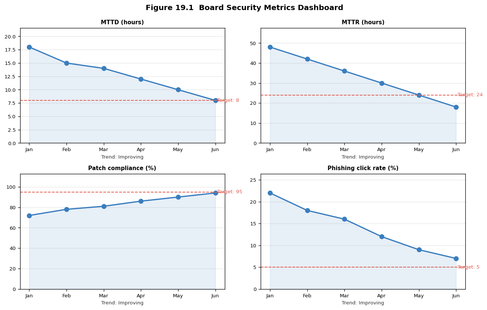

19. Chapter 19: Security Governance, Policy, and Culture#
“Culture eats strategy for breakfast.” Peter Drucker (applied to security: a security programme without a supportive culture will be circumvented, not adopted.)
19.1. Learning Objectives#
After completing this chapter, you will be able to:
Explain what security governance is and how it differs from security management.
Describe the role of the CISO and the security organisation structure.
Explain the policy hierarchy: policy, standard, procedure, and guideline.
Write a policy document that is enforceable and auditable.
Describe board-level reporting of cybersecurity risk and metrics.
Design a security awareness programme that changes behaviour, not just knowledge.
Explain how to build and sustain a positive security culture.
Describe common certification and compliance frameworks and their governance implications.
19.2. Key Terms#
Governance: the framework of policies, roles, and processes by which an organisation is directed and controlled.
CISO: Chief Information Security Officer; executive responsible for the security programme.
Policy: a high-level statement of intent, direction, and principle.
Standard: mandatory requirements derived from policy; technology-specific and measurable.
Procedure: step-by-step instructions for implementing a standard.
Guideline: recommended but non-mandatory advice.
KRI: Key Risk Indicator; a metric that signals changing risk levels.
KPI: Key Performance Indicator; a metric measuring programme effectiveness.
Security culture: the collective values, beliefs, and behaviours relating to security within an organisation.
Security awareness: programmes designed to change employee knowledge and behaviour.
Tone at the top: the demonstration by senior leadership that security is a genuine priority.
19.3. What Security Governance Is#
Security governance is the set of responsibilities and practices exercised by the board and executive management with the goal of providing strategic direction, ensuring objectives are achieved, and verifying that risk is managed appropriately. It is distinct from security management (day-to-day operational decisions) and security operations (implementing controls).
19.3.1. Why Governance Matters#
Without governance, security is a collection of ad hoc technical activities rather than a disciplined programme aligned with organisational objectives. Governance answers: What are we protecting, and why? What level of risk is acceptable? Who is accountable when things go wrong? How do we know our controls are working?
19.4. The CISO Role#
19.4.1. Strategic Responsibilities#
The CISO is the executive accountable for the security programme. Strategic responsibilities include: defining the security strategy and roadmap, obtaining and allocating budget, reporting risk to the board and executive leadership, ensuring regulatory compliance, overseeing vendor and third-party risk, and building the security organisation.
19.4.2. Organisational Models#
19.4.2.1. Centralised Security Function#
A centralised security function reports to the CIO, CFO, or CEO and has direct authority over security policy and standards across the organisation. This model provides consistent policy enforcement but can create friction with business units that feel security slows them down.
19.4.2.2. Federated Security Model#
In a federated model, a central security function sets policy and standards, but embedded security personnel in each business unit implement and enforce them locally. This model balances central consistency with business-unit agility.
19.4.3. Reporting Lines and Independence#
Security governance best practice recommends that the CISO not report to the CIO, because security and IT delivery have inherent conflicts of interest (security may slow releases or block systems that IT needs to keep online). The CISO ideally reports to the CEO or the board audit committee. In practice, the CISO reporting line varies widely by organisation size and maturity.
19.5. The Policy Hierarchy#
19.5.1. Policy#
A policy is a high-level statement of management’s intent. It answers: what must be done and why, without specifying how. Policies are technology-neutral and long-lived. An information security policy states that the organisation is committed to protecting the confidentiality, integrity, and availability of information assets; it does not specify which encryption algorithm to use.
19.5.1.1. Policy Characteristics#
An enforceable policy must be: written and approved by the appropriate authority, communicated to all affected parties, specific enough to be auditable (not vague platitudes), reviewed periodically (typically annually), and have a clear violation consequence.
19.5.2. Standard#
A standard derives specific, measurable, mandatory requirements from the policy. The encryption policy says data at rest must be protected; the encryption standard says that data classified Confidential or above must be encrypted using AES-256-GCM. Standards are technology-specific and updated more frequently than policies as technology evolves.
19.5.3. Procedure#
A procedure is a step-by-step instruction set for implementing a standard. The encryption standard says to use AES-256-GCM; the encryption procedure specifies exactly which tool to use, which configuration flags to set, how to store the key, and how to verify the encryption is working. Procedures are the operational instructions that technical staff follow.
19.5.4. Guideline#
A guideline is recommended, non-mandatory advice that helps users follow policy in situations not covered by standards and procedures. Guidelines use the word “should” rather than “shall” or “must.” A password guideline might recommend using a password manager, without mandating a specific product.
19.6. Board-Level Security Reporting#
19.6.1. Communicating Risk in Business Language#
Boards are not technical audiences. Effective board reporting translates technical risk into business impact: potential financial exposure (ALE), regulatory liability, reputational risk, and operational disruption. A chart showing “number of vulnerabilities patched this month” means nothing to a board; a statement that “our mean time to patch critical vulnerabilities has improved from 21 to 7 days, reducing our exposure window by 66%” communicates progress against a business outcome.
19.6.2. Key Metrics for Board Reporting#
Metric |
What it measures |
|---|---|
Mean time to detect (MTTD) |
Detection capability; lower is better |
Mean time to respond (MTTR) |
Response effectiveness |
Patch compliance rate |
Vulnerability management hygiene |
Phishing simulation click rate |
Human layer risk |
Critical/high open findings |
Remediation backlog |
Third-party risk assessment coverage |
Supply chain risk management |
Audit findings closure rate |
Compliance posture |
19.6.3. Key Risk Indicators#
KRIs are leading indicators that signal changing risk levels before an incident occurs. Examples: a spike in failed login attempts (credential stuffing campaign beginning), an increase in employees clicking phishing simulations (awareness declining), a large number of unpatched critical vulnerabilities past SLA (remediation programme breaking down).
19.7. Security Culture#
19.7.1. What Culture Is and Why It Matters#
Security culture is the sum of employee attitudes, beliefs, and behaviours toward security. A positive security culture produces employees who: report suspicious activity without fear of punishment, follow security policies not because they are forced to but because they understand the reason, and treat security as a shared responsibility rather than a blocker.
A negative or absent security culture produces employees who: find workarounds for security controls they find inconvenient, do not report incidents out of fear of blame, and view the security team as adversaries rather than allies.
19.7.2. Tone at the Top#
Culture change cannot be mandated from the middle of the organisation. Leadership behaviour signals what the organisation truly values. If the CEO publicly skips MFA enrollment because it is inconvenient, no amount of policy enforcement will produce employee MFA adoption. Conversely, when the CEO publicly champions security, completes the same training as all staff, and backs the CISO’s budget requests, security becomes a genuine organisational priority.
19.7.3. Building a Positive Security Culture#
19.7.3.1. From Compliance to Commitment#
Compliance-based approaches create minimum-viable security behaviour: employees do exactly what is required to pass the audit and no more. Commitment-based approaches create employees who genuinely care about security outcomes. The difference is explanation: when employees understand why a control exists and what harm it prevents, they are more likely to follow it and to extend the principle to novel situations.
19.7.3.2. Just Culture and Incident Reporting#
A just culture distinguishes between human error, at-risk behaviour, and reckless behaviour, and responds proportionately. Punishing every security mistake drives incidents underground. A just culture encourages reporting: near-misses are learning opportunities; punitive responses to honest mistakes prevent the organisation from learning from them.
19.8. Common Compliance Frameworks#
Framework |
Sector |
Mandate |
|---|---|---|
ISO/IEC 27001 |
All sectors |
Voluntary; certification by accredited auditor |
NIST CSF |
All sectors; US federal |
Voluntary for most; referenced in regulations |
SOC 2 Type II |
Technology/SaaS |
Voluntary; required by many enterprise customers |
HIPAA |
US healthcare |
Mandatory for covered entities |
PCI DSS |
Payment card processing |
Mandatory for card handling organisations |
GDPR |
EU personal data |
Mandatory for organisations in scope |
CMMC |
US defence contractors |
Mandatory for DoD supply chain |
FedRAMP |
US federal cloud |
Mandatory for cloud services to US federal government |
19.9. Why This Matters#
Security governance determines whether a security programme is sustainable and effective or depends on the heroics of individual practitioners. Governance provides the authority to enforce policy, the budget to implement controls, the executive backing to prioritise security over short-term convenience, and the accountability structure that ensures security decisions are owned at the right level. Without governance, security is reactive, underfunded, and fragile.
19.10. News in Focus#
SEC enforcement actions against public company CISOs and boards following breaches have established that cybersecurity is a material business risk requiring accurate disclosure. Companies that misrepresented their security posture to investors, or where boards failed to provide adequate governance oversight, have faced civil enforcement. This regulatory development is driving boards to demand substantive security briefings and CISOs to produce board-quality risk reporting rather than technical metrics.
# Chapter 19 -- Security governance: policy validator and metrics dashboard
import matplotlib
matplotlib.use('Agg')
import matplotlib.pyplot as plt
import numpy as np
from io import BytesIO
from IPython.display import display, Image
from dataclasses import dataclass
from typing import List, Optional
# ── Policy quality checker ─────────────────────────────────────────────────────
@dataclass
class SecurityPolicy:
title: str
version: str
owner: str
approved_by: str
review_date: Optional[str]
applies_to: str
body: str
has_violation_consequence: bool
has_exception_process: bool
def quality_check(self) -> List[str]:
issues = []
if not self.owner: issues.append("Missing policy owner")
if not self.approved_by: issues.append("No approval authority listed")
if not self.review_date: issues.append("No review date specified")
if not self.has_violation_consequence:
issues.append("No violation consequence defined -- not enforceable")
if not self.has_exception_process:
issues.append("No exception process defined")
vague = ["should", "may wish to", "as appropriate", "reasonable"]
found_vague = [v for v in vague if v in self.body.lower()]
if found_vague:
issues.append(f"Vague language found: {found_vague} -- replace with 'must' or 'shall'")
if len(self.body.split()) < 100:
issues.append("Policy body too short -- likely missing requirements")
return issues
policies = [
SecurityPolicy(
"Acceptable Use Policy", "2.1", "CISO", "CEO",
"2027-01-01", "All employees and contractors",
("All users must use company-issued devices for company data. "
"Users must not install unauthorised software. "
"Internet access is logged and subject to monitoring. "
"Violations may result in disciplinary action up to and including termination. "
"Exceptions require written approval from the CISO. " * 8),
has_violation_consequence=True, has_exception_process=True,
),
SecurityPolicy(
"Password Policy", "1.0", "", "IT Manager",
None, "IT systems",
"Passwords should be complex and should not be shared. Users may wish to use a password manager.",
has_violation_consequence=False, has_exception_process=False,
),
]
print("=== Policy Quality Audit ===\n")
for p in policies:
issues = p.quality_check()
grade = "PASS" if not issues else "FAIL"
print(f" [{grade}] {p.title} v{p.version}")
if issues:
for iss in issues:
print(f" [!] {iss}")
else:
print(f" All quality checks passed")
print()
# ── Board-level security metrics dashboard ────────────────────────────────────
months = ['Jan', 'Feb', 'Mar', 'Apr', 'May', 'Jun']
mttd = [18, 15, 14, 12, 10, 8] # hours; lower is better
mttr = [48, 42, 36, 30, 24, 18] # hours; lower is better
patch = [72, 78, 81, 86, 90, 94] # % compliance; higher is better
phish = [22, 18, 16, 12, 9, 7] # % click rate; lower is better
fig, axes = plt.subplots(2, 2, figsize=(11, 7))
fig.suptitle("Figure 19.1 Board Security Metrics Dashboard", fontsize=12, fontweight="bold")
for ax, data, label, target, good_direction in [
(axes[0,0], mttd, "MTTD (hours)", 8, "lower"),
(axes[0,1], mttr, "MTTR (hours)", 24, "lower"),
(axes[1,0], patch, "Patch compliance (%)", 95, "higher"),
(axes[1,1], phish, "Phishing click rate (%)", 5, "lower"),
]:
color = "#3a7ebf"
ax.plot(months, data, marker='o', color=color, lw=2, markersize=7)
ax.fill_between(months, data, alpha=0.12, color=color)
ax.axhline(target, color="#e05a4e", ls="--", lw=1.2)
ax.text(months[-1], target, f" Target: {target}", color="#e05a4e", va="center", fontsize=8)
ax.set_title(label, fontsize=9, fontweight="bold")
ax.set_ylim(0, max(data) * 1.2)
trend = "Improving" if (good_direction=="lower" and data[-1]<data[0]) or \
(good_direction=="higher" and data[-1]>data[0]) else "Degrading"
ax.set_xlabel(f"Trend: {trend}", fontsize=8, color="#333")
ax.tick_params(labelsize=8)
ax.grid(axis='y', alpha=0.3)
plt.tight_layout()
_buf = BytesIO()
plt.savefig(_buf, format="png", dpi=120, bbox_inches="tight")
plt.close(); _buf.seek(0)
display(Image(data=_buf.read()))
print("Figure 19.1 rendered.")
=== Policy Quality Audit ===
[PASS] Acceptable Use Policy v2.1
All quality checks passed
[FAIL] Password Policy v1.0
[!] Missing policy owner
[!] No review date specified
[!] No violation consequence defined -- not enforceable
[!] No exception process defined
[!] Vague language found: ['should', 'may wish to'] -- replace with 'must' or 'shall'
[!] Policy body too short -- likely missing requirements

Figure 19.1 rendered.
19.11. Review Questions (MCQ)#
Q1. Security governance differs from security management in that governance: A. Handles day-to-day technical operations B. Provides strategic direction and accountability at the executive and board level C. Writes security policies D. Manages firewall rules
Q2. A security standard differs from a policy in that a standard: A. Is written by the CISO B. Is technology-specific, measurable, and mandatory C. Is non-mandatory D. Is reviewed only once every five years
Q3. The word that belongs in a mandatory policy statement is: A. “should” B. “may” C. “could” D. “must” or “shall”
Q4. Effective board-level security reporting should use: A. Technical CVE identifiers and CVSS scores B. Business-language risk framing with financial exposure C. Log excerpts from the SIEM D. Nmap output
Q5. A Key Risk Indicator (KRI) is best described as: A. A metric measuring past performance B. A leading indicator signalling changing risk levels before an incident C. A compliance audit result D. A count of firewall rules
Q6. Tone at the top is most effective when: A. Senior leaders publicly champion security and model the required behaviours B. The CISO sends all-staff emails C. Policies are posted on the intranet D. Annual training is mandatory
Q7. A just culture improves security by: A. Punishing all security mistakes equally B. Encouraging incident reporting by responding to errors proportionately, not punitively C. Removing all security policies D. Automating all responses
Q8. SOC 2 Type II is primarily demanded by: A. US healthcare regulators B. Payment card brands C. Enterprise customers of technology/SaaS companies D. EU supervisory authorities
Q9. An exception process in a security policy is important because: A. It allows any user to bypass any control B. It provides a documented, risk-accepted mechanism for legitimate deviations C. It reduces the number of controls required D. It eliminates audit findings
Q10. The CISO ideally reports to the CEO or board audit committee rather than the CIO because: A. The CISO earns more than the CIO B. Security and IT delivery have inherent conflicts of interest C. The CIO lacks authority to approve budgets D. GDPR requires it
Answers: Q1 B, Q2 B, Q3 D, Q4 B, Q5 B, Q6 A, Q7 B, Q8 C, Q9 B, Q10 B.
19.12. Lab Assignment#
Part A – Policy writing: Write a complete Acceptable Use Policy for a fictional 300-person company. Include: purpose, scope, policy statements (at least 8 “must” requirements), violation consequences, exception process, review date, and approval authority. Run it through the policy quality checker above.
Part B – Board metrics report: Using the metrics dashboard above as a template, add two additional metrics of your choice (e.g., third-party risk assessments completed, security incidents by severity). Write a two-paragraph executive narrative for the board explaining the trend in MTTD and phishing click rate in business language.
Part C – Policy hierarchy: For a fictional cloud-first company, create the full hierarchy for data encryption: one policy statement, three derived standards (for data at rest, data in transit, and key management), and one procedure for encrypting an S3 bucket in AWS. Show how each level derives from the level above.
Part D – Culture assessment: Design a 10-question survey to measure security culture in a 500-person organisation. For each question, specify: the construct being measured (awareness, attitude, or behaviour), the response scale, and what a low score indicates should be addressed in the awareness programme.